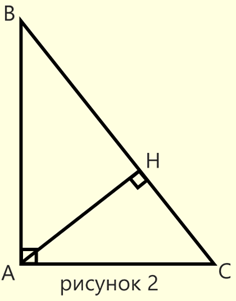
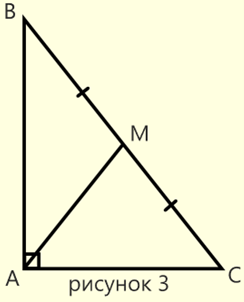

*
Прямоугольный Треугольник
 # Прямоугольный треугольник
# Прямоугольный треугольник - треугольник, один из углов которого равен 90 градусов.
Сторона, лежащая напротив прямого угла
называется гипотенузой (BC), а две другие стороны - катетами (AB и AC).
# Теорема Пифагора: В прямоугольном треугольнике квадрат гипотенузы равен сумме квадратов катетов. BC^2 = AB^2 + AC^2
# В прямоугольном треугольнике катет, лежащий напротив угла в 30 градусов, равен половине гипотенузы (AC = BC/2).


Свойства высоты и медманы прямоугольного треугольника, проведенных из прямого угла:
# В прямоугольном треугольнике квадрат высоты, проведённой из вершины с прямым углом, равен произведеию отрезков,
на которые эта высота разбивает гипотенузу AH = BH * HC (рисунок 2)
# В прямоугольном треугольнике высота, проведённая из вершины с прямым углом, равна произведеию катетов,
деленному на гипотенузу AH = AB * AC / BC (рисунок 2)
# В прямоугольном треугольнике высота, проведенная к гипотенузе, делит его на два подобных прямоугольных треугольника,
которые также подобны исходному (рисунок 2)
# В прямоугольном треугольнике медиана, проведённая из вершины с прямым углом, равняется половине гипотенузы
AM = BC/2 (рисунок 3)